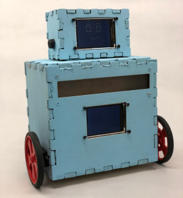

Ian Kranz, imk33
Nikhil Dhawan, nd353
Sofya Calvin, sec293
"An expressive robot that brings social media interaction into the physical world."
Social Media outlets like Twitter and Facebook have become dominating players in the field of human interaction. Indeed many interactions have become mediated by digital technology. We believe the loss of the physical component of interaction has had negative effects on human relationships overall. Current research studies agree that people become more isolated through use of social media.
Our project aims to explore potential solutions to the lack of physical feedback in the world of social media. We built an emotionally expressive robot which physically reacts to Tweets in a live setting. Users can tweet to the robot’s Twitter account and receive near instant feedback as the robot, plays a sound, moves on its surface, displays the tweet text, shows a facial expression, lights up with different colors and intensities to convey its feelings about the tweet.
A server application running on a laptop computer monitors the robot's Twitter account in real time. When a tweet is received, the server processes the content and fits the text to an emotion. The twitter user ID, tweet content, and emotion are all sent to the robot via a wireless bluetooth serial connection whereupon the robot displays the information and maps the emotion to a predetermined set of outputs for each of the possible emotions.
The robot itself is built mostly from plywood. The design is a two-box design in the spirit of classic robot design where the body is simply a box and the head a smaller box sitting on top of the body box. The boxes were constructed by laser-cutting plywood with teeth-like notches such that the panels could fit into each other well to form a box. The body box is 6''x5.5''x4'', and the head box is 4''x2.5''x2''.
The head has a rectangular hole cut out in the front into which we placed the Adafruit TFT display to represent the robot’s face. Four screw holes were made to hold the display in place. Holes were drilled into the sides of the head, one on each side, to hold the Piezo Speakers. The placement of the speakers is intended to give the appearance of ears on the robot. Another rectangular hole was cut on the bottom panel of the head so that wires can be fed from the body into the head. Inside the head also was placed the HC-05 Bluetooth module. The head panels were hot glued together to form the final head.
The body was constructed much the same as the head. A rectangular hole was made for the other Adafruit TFT display in the approximate center of the front panel of the body. The display was mounted here with screws and its serves as a place to show the tweet content received by the robot. Above the display and also on the front panel is a rectangular hole through which the robot’s expressive lights are visible. The rectangular hole is covered from the inside by a thin layer of frosted-texture plastic cut from a plastic shoe-box. The plastic was added to give the LEDs a more dispersed lighting effect as well as to obscure the view of the robot’s inner circuitry. Behind the plastic was mounted the LED circuit board. The board is actually two small solder boards glued together (used because one large solder board did not fit as intended) and contains a total of 12 LEDs (4 Green, 4 Yellow, and 4 Red). The LEDs are oriented on the board such that the four LEDs of each color are approximately equidistant and spanning the length of the rectangular viewing hole. The board is secured by screws to the front wooden panel and offset from the panel using spacers. On either side of the body box are holes cut to fit the continuous rotation servos. The servos are secured to the panels with screws. The servos are intentionally placed toward the front of the robot so that with wheels attached to the servos the robot will rest on a table with points of contact being two wheels in the front and a small piece of wood on the back. The piece of wood is secured to the bottom panel near the rear of the body using screws. On the back body panel, a rectangular door was cut to allow for interior access to the body. The door was placed on a hinge and the hinge connected to the rest of the body with hot glue. A small plastic knob was glued to the door as a handle with which to open and close the access door. A hole was cut into the top piece of the body to allow wires to run from the body to the head. All of the body panels were glued together to form the final body box. The head was simply glued onto the top of the body box, completing the body design.
Inside the body box, in addition to the components already mentioned, are two ECE 4760 small boards Velcroed to the inside of the two side panels. The 9 Volt battery used to power the system is placed unsecured inside the body connected by wire to a small solder board used for power distribution. Power is delivered to the two PIC32s via DC barrel plugs from the power distribution board. The power distribution board is not secured down but is held in place by the force of the wires plugged into it.

The HC-05 module comes pre-configured to send and receive serial data over Bluetooth and UART. Our design only requires the module to receive character data over Bluetooth from a Windows computer and send the characters over a wired UART connection to the PIC32. The module ships with these capabilities, so no configuration was required. We simply attached power, ground, and TX to the PIC and found and paired with the Bluetooth device on the computer. The baud rate is set by standard to 9600, so this baud rate was used to receive on the PIC32. It should be noted that this module is rather old and was able to connect to our somewhat old Windows computer, but it was unable to connect to any recent Apple products.